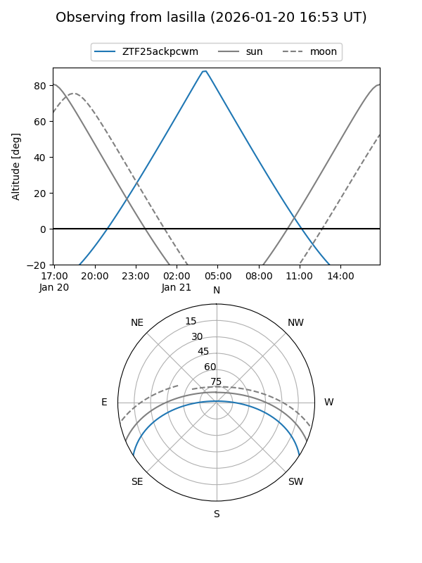
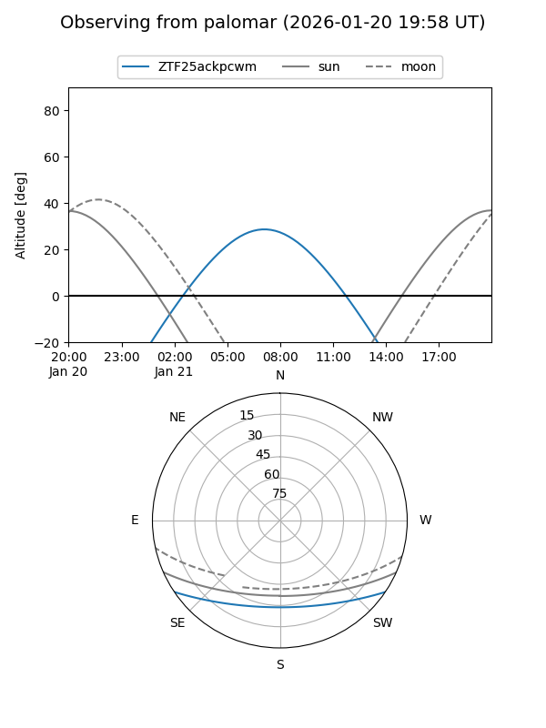

ZTF25ackpcwm
Target ZTF25ackpcwm at 2026-01-21 08:15
Aliases and brokers:
FINK: link
Lasair: link
ALeRCE: link
alt names
ZTF25ackpcwm (ztf,fink_ztf)
Coordinates:
equatorial (ra, dec) = 110.0735,-27.88728
equatorial (HMS+DMS) = 07:20:17.65,-27:53:14.22
galactic (l, b) = (240.9649,-6.57458)
Flags:
Photometry:
last ztfr=19.33
2 ztfr detections
Lightcurve

Visibility


Additional plots